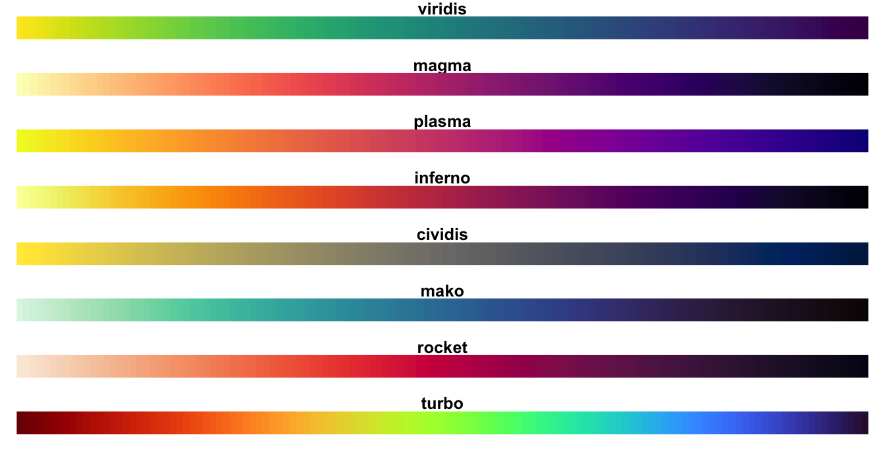

Inhalt
Jetzt kommt wirklich einer der allercoolsten Teile des ganzen Kurses.
R ist einfach unfassbar mächtig, was das Visualisieren von Daten angeht,
viel ausgefeilter und vielfältiger, als Excel und SPSS es je erreichen
können. Unser Ziel ist euch ein paar schnelle Kochrezepte für die
wichtigsten Visualisierungsaufgaben mitzugeben, und die Neugier auf mehr
zu wecken, in dem wir eine Einführung in das Visualisierungspaket
ggplot2 geben.
Mit R sind abgefahrene Sachen möglich. Eine vielfältige Übersicht darüber, was alles möglich ist, erhältst du in der R Graph Gallery. Hier sind ein paar Beispiele:
Aber auch solche geometrischen Schönheiten
Ziemlich beeindruckend, oder?
Das soll hier aber nur ein kleiner Einblick in das sein, was alles möglich ist. In diesem Tutorial starten wir natürlich bei den Basics und fokussieren uns darauf grundständige Diagramme zu zeichnen. Mit diesem Grundwissen kannst du dir dann auch selbst beibringen solche abgefahrenen Diagramme zu erstellen.
In den Links über den Grafiken findest du detaillierte Anleitungen, wenn du dann soweit bist.
Wie gesagt, wir fangen Schritt für Schritt an und daher sind das hier die Ziele für heute:
Lernziele
Balkendiagramm (barplot) erstellen
Histogramm (histogram) erstellen
Boxplot erstellen
Punktdiagramm (scatterplot) erstellen
Liniendiagramm (linegraph) erstellen
Schnelle Grafikfunktionen, um einen Überblick zu gewinnen
Grafiken mit ggplot2
nach dem Baukasten der Grammar of Graphs erstellen
colorblind-friendly sein
Am besten maximierst du das Fenster des Tutorials, um alle Abbildungen vollständig sehen zu könnnen. Ansonsten kann es passieren, dass du z.B. eine Legende nicht siehst oder andere Teile des Diagramms verdeckt sind.
Einführung
Es gibt (wie immer) tausend verschiedene Wege, Visualisierungen mit R
zu erstellen. Aber einer hat sich über die Jahre als besonders beliebt
erwiesen, und das ist das Paket ggplot2.
Der Grund, warum wir dir diesen Weg beibringen:
- klares Baukastenprinzip: Auch später können komplexe Anpassungen der Grafik an die eigenen Vorstellungen relativ schmerzfrei umgesetzt werden.
- Popularität: Es gibt im Internet viele gute Anleitungen.
- Funktionalität:
ggplot2kann eigentlich alles, was du brauchst, und wenn es etwas nicht kann, gibt es dafür mit hoher Wahrscheinlichkeit bereits ein Paket.
Grammar of Graphs
Das gg im Paketnamen ggplot2 steht für
Grammar of Graphs.
Leland Wilkinson ist der Gründer des Grammar of Graphs-Ansatzes. Im Grunde ist das eine Theorie darüber, mit welchen Regeln und Bausteinen statistische Grafiken gut und übersichtlich erstellt werden können (Wilkinson 2005).
ggplot2 ist die Umsetzung dieses theoretischen
Baukastens. Es wurde von Hadley Wickham geschrieben und ist ein relativ
altes Paket im R-Ökosystem (Wickham 2009).
benötigtes Paket
Der erste Schritt für dieses Tutorial ist, das Paket
ggplot2 in die aktive Sitzung zu laden. Tu das mittels
library(). (Installiert hast du es schon, sonst wären alle
anderen Tutorials nicht gelaufen.)
library()library(ggplot2)▼ * Exkurs: Einordnung in das R-Ökosystem
ggplot2 ist nur eins von mehreren Interfaces für die
unterhalb der Oberfläche liegenden Grafik-Strukturen von R. Es ist also
nur eine Spitze des Eisbergs, und der Eisberg hat mehrere Spitzen, zum
Beispiel das Paket lattice oder Visualisierungsfunktionen
aus base R.
Ein Beispiel:
Wenn du im Internet nach „Balkendiagramm erstellen mit R“ suchst, wirst
du vermutlich Anleitungen für die base R-Variante
barplot() finden. Trotzdem geht das auch mit
ggplot2. Du kannst am Ende den Weg verwenden, der dir näher
liegt. Wir denken, dass ggplot2 zu einem intuitven
Interface für dich werden kann, aber möchten dir bewusst machen, dass es
keinesfalls das einzig Wahre ist! Jede Variante hat eigene Vor- und
Nachteile.
Letztlich nutzen alle higher level Grafik-Funktionen unter
der Oberfläche entweder grid oder graphics, um
Grafiken zu erstellen. ggplot2 gehört zur Familie der
grid-basierten Grafikpakete.

Bild aus: (Gagolewski 2023): Deep R Programming
Einordnung in den wissenschaftlichen Prozess
Sind die Daten erhoben und importiert folgt die Arbeit mit Grafiken. Sie sind ein guter Weg, Zusammenhänge in den Daten sichtbar zu machen. Zum einen, um sich selbst in den Daten zu orientieren, und zum anderen, um die Ergebnisse der Analyse zu präsentieren. Visualisierungen werden also an zwei Stellen im Prozess benötigt:
- um einen Überblick zu gewinnen
- um am Ende Ergebnisse zu kommunizieren
Welche Grafik du wann anwenden kannst, hängt vom Skalenniveau der Daten und der Anzahl von Variablen ab.
Grob kann unterschieden werden zwischen:
- Plots, die die Verteilung einer einzelnen Variablen darstellen
- Plots, die den Zusammenhang zwischen zwei oder mehr Variablen zeigen
Die fünf essentiellen Diagrammtypen
Eine kurze grafische Übersicht, darf bei einem Tutorial über Grafiken natürlich nicht fehlen:
| de | en | geeignet für | |
|---|---|---|---|
|
|
Balkendiagramm | barplot | 1 kategoriale Variable |
|
|
Histogramm | histogram | 1 stetige Variable |
|
|
Boxplot | boxplot | 1 kategoriale & 1 stetige Variable |
|
|
Punktdiagramm | scatterplot | 2 stetige Variablen |
|
|
Liniendiagramm | linegraph | 1 stetige und 1 zeitlich geordnete Variable |
Steigen wir direkt ein!
Einiges im folgenden orientiert sich an einem tollen, frei verfügbaren Online-Lehrbuch namens Modern Dive (Ismay and Kim 2022). Wir haben die Reihenfolge geändert, Sachen übersetzt und paraphrasiert und unsere eigenen Gedanken hinzugefügt.
1. Balkendiagramm
Balkendiagramme sind geeignet, um die Verteilung einer einzelnen, kategorialen Variable zu zeigen.
Funktion: ggplot() + geom_bar()
So sieht Code aus, um mit ggplot2 ein einfaches
Balkendiagramm zu erstellen (das schön machen kommt später). Führe ihn
aus.
ggplot(data = einkaufen,
mapping = aes(x = verkehrsmittel)) +
geom_bar()Dabei wird deutlich, dass der Code durch eine klare Sprache organisiert ist:
- im Argument
datawird ein Datensatz an die Funktion übergeben - im Argument
mappingwird festgelegt, welche Variablen aus dem Datensatz wo gezeigt werden - das
+fügt eine neue Ebene hinzu, genau wie in Photoshop / Gimp / bei Overhead-Folien geom_bar()fügt eingeometrisches Objekt, nämlich die Balken (bars), hinzu
Mehr dazu, wie genau dieses mapping funktioniert, folgt später.
Baukasten-Prinzip
Leland Wilkonson, Begründer der Grammar of Graphs-Theorie sagt, dass sich jede statistische Grafik durch diese drei Kernbestandteile beschreiben lässt:
dataaesthetic mappinggeometric objects
Mit data kennst du dich ja jetzt schon aus, daher können
wir direkt zum mapping übergehen.
Wichtig ist zu wissen, dass ggplot() nur data
frames als Daten akzeptiert.
aesthetic mapping
Die Funktion aes() konstruiert aesthetic
mappings. Auf Deutsch: Stellt eine Verbindung mit einer Variable
aus den Daten mit einer bestimmten grafischen Eigenschaft des Plots her.
Dazu sagen wir auch Mapping einer Variable auf ein
ästhetisches Attribut.
Oben im Code: aes(x = verkehrsmittel): Die Variable
Verkehrsmittel wird auf die x-Achse gemappt.
Verfügbare aesthetische Attribute
- Achsen (
x,y) - Farbe (
color) - Füllung (
fill) - Größe (
size) - Transparenz (
alpha) - …
Ändere den Code so, dass die Variable Verkehrsmittel statt auf der
x-Achse nun auf die y-Achse gemappt wird. Wie
wird sich das Diagramm wohl verändern?
Beachte, dass hier die Argumentnamen data und
mapping weggelassen wurden, so wie es in der Praxis
üblicherweise auch getan wird. Das ist möglich, da die Reihenfolge der
Argumente beachtet wird, also erst data, dann
mapping und schließlich geometric objects.
ggplot(einkaufen, aes(x = verkehrsmittel)) +
geom_bar()ggplot(einkaufen, aes(y = verkehrsmittel)) +
geom_bar()Es gibt, wie oben erwähnt, noch mehr aesthetic attributes
außer der x-Achse und der y-Achse, die
bekommen später noch ihren Raum.
geom_bar
Und was ist dieses geom_bar()? Das wird am ehesten
deutlich, wenn es weggelassen wird!
Schau dir an, wie der Plot aussieht ohne die Ebene
mitgeom_bar()!
ggplot(einkaufen, aes(x = verkehrsmittel))Jetzt versteht du vielleicht, wofür die
geom_bar()-Funktion da ist: Geometrische Formen, in diesem
Fall Balken, in den Plot zu zeichnen! Der Plot ist leer, aber die Achsen
sind bereits beschriftet und perfekt vorbereitet, aber es fehlt noch das
geometrische Objekt.
Innerhalb der geom_bar()-Funktion finden Berechnungen
statt: die einzelnen Ausprägungen der Verkehrsmittel werden gezählt, um
die Höhe der Balken zu bestimmen. Aber das passiert alles im
Hintergrund.
2. Histogramm
Histogramme sind geeignet, um die Verteilung einer einzelnen, stetigen Variable zu zeigen.
Funktion: geom_histogram()
Unser Go-To-Beispiel für eine stetige Variable ist
einkaufen$alter, die dir schon in den letzten Tutorials
begegnet sein sollte. Beachte, dass du innerhalb eines
ggplot-Codes den $-Operator nicht benutzen
musst. Das liegt daran, dass ggplot aufgrund des ersten
Arguments schon weiß, in welchem Datensatz die Variable gesucht werden
muss.
Hier ist ggplot2-Code für ein einfaches, absolut nicht
schönes Histogramm. In diesem Abschnitt wird es deswegen auch mal Zeit,
über Farben und Verschönerungen zu sprechen.
ggplot(einkaufen, aes(alter)) +
geom_histogram()Was ist ein Histogramm?
Bei einem Histogramm werden auf der x-Achse die möglichen Ausprägungen der Variable aufgelistet, und auf der y-Achse die Häufigkeit. Es ist also genau das gleiche Prinzip wie bei einem Balkendiagramm, nur dass du dich hier zusätzlich noch mit der Kategorienbreite (binwidth) auseinandersetzen musst.
Denn: Balkendiagramme sind für diskrete Daten, und diskrete Daten haben natürliche Kategorien. Zum Beispiel ist das Verkehrsmittel ÖPNV etwas anderes als Motorrad - die Kategorien liegen also schon in der Natur der Sache.
Das ist bei stetigen (kontinuierlichen) Daten anders: Von Natur her gibt es bei stetigen Daten immer unendlich viele mögliche Ausprägungen, und also auch immer unendlich viele mögliche Kategorien.
Zum Beispiel kann ein Meter in unendlich feine Messeinheiten aufgeteilt werden:
- Meter
- Dezimeter
- Zentimeter
- Millimeter
- Mikrometer
- Nanometer
- Picometer
- Femtometer
- Attometer …
Da es unendlich Möglichkeiten gibt einen Meter einzuteilen, gehen keine natürlichen Kategorien daraus hervor. Deswegen können die Kategorien beliebig gebildet werden.
Beim Histogramm des Alters oben sind die Balken zum Beispiel immer
2.5 Jahre breit, komplett random also. Darüber informiert
ggplot auch beim Erstellen des Diagramms mit einer
Nachricht:
`stat_bin()` using `bins = 30`. Pick better value with `binwidth`ggplot sagt damit: „Hey, ich habe deine Daten einfach
mal in 30 gleich große Kategorien eingeteilt, aber das ist ein
default-Wert, den du bitte anpassen solltest.“
Kategorienbreite anpassen
In der Warnmeldung wurde bereits das Argument binwidth
erwähnt. Hier ist Code, mit dem die Kategorienbreite auf 5 (Jahre)
festgelegt wird.
ggplot(einkaufen, aes(x = alter)) +
geom_histogram(binwidth = 5)Generell gilt hier, je breiter die binwidth des Histogramms,
desto “gröber” wird die Darstellung der Informationen. Das wird
besonders deutlich, wenn du dir die binwidth = 1 und die
binwidth = 20 anzeigen lässt. Versuche stets einen
geeigneten Wert zu finden, der erlaubt, die Informationen der Grafik
schnell zu vermitteln ohne dabei zu komplex zu sein.
color und fill
Da die Balken gerade visuell in einer großen grauen Masse
verschwinden, wird noch nicht so ganz deutlich worum es eigentlich geht.
Deswegen wäre es hilfreich, wenn alle Balken eine schwarze Umrandung
hätten und etwas hellgrauer wären. Beachte, dass jetzt nach dem
binwidth-Argument dafür noch die Argumente
color und fill stehen.
Fun fact: in ggplot ist es für R egal, ob du die UK
Variante von colour schreibst oder das amerikanische
color. Wie das geschrieben wird ist in diesem Fall reine
Geschmackssache.
ggplot(einkaufen, aes(x = alter)) +
geom_histogram(binwidth = 5,
color = "black",
fill = "grey")Später in diesem Tutorial wird es noch farbenfroher, aber dazu im Kapitel über Farben mehr.
aus Fehlern lernen
Und jetzt kommt das Praktische: Es gibt noch sehr viele weitere
geom_...()-Funktionen. Zum Beispiel
geom_point(), diese Funktion zeichnet Punkte in deinen
Plot.
Probiere das doch einfach mal aus und tausche
geom_histogram() durch geom_point().
ggplot(einkaufen, aes(x = alter)) +
geom_point()ggplot(einkaufen, aes(x = alter)) +
geom_histogram()Dass hier eine Fehlermeldung aufploppt, ist völlig normal! Fehlermeldungen sind freundlich, denn Programmierer*innen geben sich (oft) viel Mühe, diese möglichst informativ und genau zu machen. Also hab keine Angst, und lies dir tatsächlich mal durch was da steht!
! Problem while setting up geom.
ℹ Error occurred in the 1st layer.
Caused by error in `compute_geom_1()`:
! `geom_point()` requires the following missing aesthetics: y- Schon die erste Zeile gibt dir eine wichtige Information: Der Fehler
trat beim Hinzufügen des
geometrischen Objekts auf und nicht an irgendeiner anderen Stelle - Die zweite Zeile sagt, dass der Fehler in der ersten Zeile / Ebene
passiert ist. Das wird relevant, wenn du mehrere Ebenen mit
+übereinanderlegst in deinem Plot. - Die dritte Zeile musst du nicht genau verstehen, das ist irgendwas
Internes von
ggplot2 - die vierte Zeile schließlich sagt dir ganz genau, wo das Problem
ist: Du brauchst eine zweite Variable. Und zwar auf der y-Achse. Das
ergibt auch Sinn, denn ein Punkt hat immer zwei Koordinaten, eine
x- und einey-Koordinate! Logischerweise kann kein Punkt gezeichnet werden, wenn du nur einex-Koordinate angibst.
Löse das Problem, indem du in aes() noch das Argument
y = weg angibst. Denk daran, Argumente werden durch Kommata
getrennt.
“weg” ist eine stetige Variable, die den zurückgelegten
Anreiseweg zum Laden in km enthält.
ggplot(einkaufen, aes(x = alter)) +
geom_point()ggplot(einkaufen, aes(x = alter, y = weg)) +
geom_point()Jetzt hast du ein Punktdiagramm gezeichnet! Es zeigt dir hier, wie Alter und Weg zusammenhängen. Wegen ein paar extremen Werten beim Weg ist nicht wirklich etwas zu erkennen. Der übliche Weg, den Menschen in Kassel zum Einkaufen zurücklegen, liegt eher in einer Größenordnung von 0-10 km, und eher nicht zwischen 0 und 600 km. Der Großteil der Werte zusammengepackt am unteren Rand des Diagramms, und es ist nicht wirklich etwas zu erkennen, weil die Punkte sich überlagern. Mehr dazu im Kapitel über Punktdiagramme!
Du kannst mitnehmen:
- Fehlermeldungen sind freundlich,
ggplotfunktioniert wie ein Baukasten,- das
geom_...können wir austauschen, so lange dafür gesorgt wird, dass in denaesthetic mappings Variablen und Skalenniveau zu dem jeweiligengeompassen!
3. Boxplot
Ein Boxplot ist eine effektive und robuste Methode, um die Verteilung einer stetigen Variable aufgeschlüsselt nach den Auprägungen einer kategorialen Variable zu visualisieren. Darüber hinaus lässt es uns auch Ausreißer identifizieren.
Funktion: geom_boxplot()
Du erinnerst dich vielleicht daran im letzten Tutorial selbst bereits einen Boxplot gezeichnet zu haben. Hier noch einmal die Übersicht, welche Daten in einem Boxplot enthalten sind:

Boxplots werden eigentlich niemals einzeln gezeigt, sondern immer im Vergleich neben anderen Boxplots. Das heißt dann side-by-side boxplot. Das macht auch Sinn, denn für die Verteilung einer einzelnen stetigen Variablen haben wir ja bereits das Histogramm. Boxplots hingegen sind gut darin, mehrere Verteilungen übersichtlich zu vergleichen. Histogramme sind gut darin, eine einzelne Verteilung detailliert darzustellen.
Side-by-side boxplots entstehen, wenn zu der stetigen noch eine kategoriale Variable hinzukommt.
Im Plot unten wird die stetige Variable alter nach der
kategorialen Variable verkehrsmittel aufgeschlüsselt. Für
jedes Verkehrsmittel ergibt sich nun eine eigene Altersverteilung. Da
zeigen sich dann die ersten spannenden Einblicke in unsere Daten!
ggplot(einkaufen, aes(x = verkehrsmittel, y = alter)) +
geom_boxplot()Aus der Grafik können wir sehen, dass die Kategorien “E-Roller”, “Motorrad” und die “fehlenden Werte (NA)” jeweils nur einen Datenpunkt beinhalten und der Boxplot daher nur aus dem Median besteht.
# Show your data!
Der obige Boxplot hat einen großen Nachteil: Es ist nicht zu sehen, wie viele Personen in jeder Gruppe sind.
Du kannst dem Plot die fehlenden Informationen in einer neuen Ebene hinzufügen!
Die Funktion geom_jitter() zeichnet einzelne
Datenpunkte, und fügt diesen einen zufälliges Zittern (engl.
jitter) hinzu, um sie ein bisschen durcheinander zu schütteln,
sodass nicht mehr alle Punkte übereinander liegen und Datenpunkte von
anderen überdeckt werden.
sizekennzeichnet die Größe der Punktealphabestimmt die Transparenz der Punkte (von 0 - 1)widthist die Stärke des horizontalen zufälligen Jitters,heightwäre für den vertikalen Jitter
ggplot(einkaufen, aes(x = verkehrsmittel, y = alter)) +
geom_boxplot() +
geom_jitter(alpha = 0.2,
size = 3,
width = 0.2,
height = 0)Der Jitter führt in dieser Art der Verwendung nicht zu einem
Informationsverlust/-verzerrung, da wir die zwar Punkte horizontal
innerhalb der Kategorien variieren lassen (width = 0.2),
aber nicht vertikal auf der stetigen y-Achse
(height = 0).
Achte mal auf das Verkehrsmittel “Andere”. Wir sehen: Es wird ein ganzer Boxplot gezeichnet, während lediglich 7 Personen dahinter stehen, und die Box ist nicht zu unterscheiden von denen für “Auto”, wo 46 Menschen hinter stehen. Aber mithilfe der Punkte können wir nun sehen, dass bei “Andere” weit weniger Datenpunkte vorliegen und wir daher bei der Interpretation dieser Gruppe Vorsicht walten lassen sollten, da sie von der Gruppengröße her nicht mit den anderen zu vergleichen ist. Das triff mehr noch für die Kategorien “Motorrad” und “E-Roller” zu.
Aufgabe
Probiere es auch mal aus, und schaue welche anderen zwei Variablen
aus dem Beispieldatensatz einkaufen du gut für einen
Boxplot nutzen kannst.
Achte darauf, immer eine metrische mit einer kategorialen Variable zu kombinieren! Sonst gibt es komische Fehlermeldungen / komisch aussehende Plots.
Hier eine Auflistung der Variablennamen:
Kategorial:
essen: Das Lieblingsessen der Person. Nominal, 97 verschiedene Ausprägungenverkehrsmittel: Das Verkehrsmittel, mit dem die Person zum Laden gefahren ist. Nominal, 7 Auprägungenfrequenz: Wie oft die Person in einen Bioladen geht. Ordinal, 5 Stufenort: Befragungsort. Nominal, 5 Ausprägungenbioladen: Ob der Laden ein Bioladen war. Nominal, binärbefragung: Kürzel der Studierenden, die die Daten erhoben haben. Nominal, 8 Ausprägungen
Metrisch:
weg: Die Länge der Anreise zum Laden in km, Verhältnisskalaalter: Alter der Person, Verhältnisskalakochen: Anzahl der Tage pro Woche, an denen selber gekocht wird, Absolutskala
Andere:
id,datum,uhrzeitsind Metadaten die wir gerade nicht brauchen.
ggplot(einkaufen, aes(x = , y = )) +
geom_boxplot()Tipp: Wenn du die Beschriftungen einer kategorialen
Variable auf der x-Achse nicht mehr lesen kannst, weil sie
übereinandergedruckt werden: Pack die Variable einfach auf die
y-Achse! Dann werden die Beschriftungen untereinander
dargestellt und überlappen sich nicht.
Wie bereits erw√§hnt, eignen sich die Beispieldaten nicht per se f√ºr jede Diagrammart. Wundere dich daher nicht, wenn es teilweise komisch aussieht auch wenn du zwei richtig skalierte Variablen benutzt hast. Du machst das super bisher! ü•≥
Boxplot-Quiz
4. Punktdiagramm
Punktdiagramme sind geeignet, um den Zusammenhang zweier stetiger Variablen zu zeigen.
Funktion: geom_point()
Punktediagramme können dir auch unter den Namen: Streudiagramm, Punktewolke oder englisch Scatterplot begegnen.
Du hast ja bereits erfolgreich ein Punktediagramm erstellt, aber wir wollen dir auch zeigen, wie die Punktewolke aussieht, wenn tatsächlich ein Zusammenhang zwischen den Variablen zu erwarten ist:
Für dieses Diagramm wollen wir dir daher noch einen neuen Datensatz zeigen, der metrische Variablen mit vielzähligen Einträgen enthält: der economics Datensatz. Economics enthält Zeitreihendaten zu wirtschaftlichen Indikatoren in den USA. Die 6 Variablen umfassen Informationen wie Verbraucherausgaben (pce - personal consumption expenditures, in billion dollars) und Datum (month of data collection).
Im folgenden Punktediagramm wurden die Variablen uempmed
(median duration of unemployment, in weeks) und
unemploy (number of unemployed in thousands)
dargestellt. Sieh dir doch mal die Punktewolke dieser Variablen an.
ggplot(economics, aes(x = uempmed, y = unemploy)) +
geom_point()Die Punktewolke zeigt einen möglichen Zusammenhang zwischen der Anzahl an Arbeitslosen und der Anzahl an Wochen, die Menschen arbeitslos gemeldet sind. Je höher die Werte auf der x-Achse, desto höher auch die Werte der y-Achse. Zur Berechnung solcher Zusammenhänge erfährst du in einem späteren Tutorial zu Korrelationen noch mehr.
Zunächst bist du wieder gefragt.
Erstelle ein Punktediagramm für den Beispieldatensatz
einkaufen. Verwende dafür die metrischen Variablen des
Datensatzes (weg und alter). Versuche diesmal
die Funktion des Beispiels an unsere Daten anzupassen. (So wirst du es
später außerhalb des Tutorials auch oft anwenden)
ggplot(economics, aes(x = uempmed, y = unemploy)) +
geom_point()ggplot(data, aes(x = , y = )) +
geom_point()ggplot(einkaufen, aes(x = alter, y = weg )) +
geom_point()Schau dir das Diagramm mal an. Einige extrem hohe Werte der Variable
weg führen dazu, dass die Skala der y-Achse von 0 - 600 km
reicht, wodurch die “normalen” Werte am unteren Rand zu einer
undifferenzierbaren Masse zusammenschrumpfen.
Da solche Werte potentiell Ausreißer sein könnten empfielt es sich, die Daten nochmal genauer unter die Lupe zu nehmen. Dazu in einem späteren Tutorial mehr.
“Lügen” mit log-skalierten Achsen
In Fällen, in denen deine Daten sehr ungleich verteilt sind und sich
aufgrund von einzelnen extremen Werten eine undifferenzierbare Masse am
Rand der Grafik gesammelt hat, gibt es eine Möglichkeit, dies besser
darzustellen: Die y-Achse logarithmisch transformieren! Das geht in
ggplot sehr einfach, du fügst, wie bereits gewohnt, eine
neue Ebene bzw. die Funktion scale_y_log10() hinzu.
Die logarithmische Transformation ist sehr praktisch, um extreme Werte mit auf der Bildschirmfläche unterzubringen, und gleichzeitig eine sinnvolle Skalierung der normalen Werte aufrecht zu erhalten. Der Logarithmus verändert die Aussage des Diagramms wesentlich und sollte daher immer deutlich gekennzeichnet sein (siehe Diagrammbeschriftung)!
ggplot(einkaufen, aes(x = alter, y = weg)) +
geom_point() +
scale_y_log10() +
labs(subtitle = "y-Achse logarithmisch skaliert") Um mehr über Diagrammbeschriftungen mit labs() zu
erfahren, schau ins Kapitel 7.
5. Liniendiagramm
Liniendiagramme sind geeignet, um Verläufe und Entwicklungen darzustellen. Dafür braucht es zwei Variablen: eine stetige Variable, und eine andere mit einer sequentiellen Abfolge (wie z.B. die Zeit).
Die sequentielle Variable kommt dabei immer auf die
x-Achse.
Funktion: geom_line()
Hierfür nehmen wir wieder den economics Datensatz, da
wir für ein Liniendiagramm einen zeitlichen Verlauf (eine wiederholte
Messung) brauchen. einkaufen enthält zwar 160 unabhängige
Messungen, aber keine der Personen wurde ein zweites Mal befragt.
Deswegen ist einkaufen nicht geeignet, um einen Verlauf
über die Zeit darzustellen.
Lassen wir uns also mittels der Variablen date und
unemploy den Verlauf der Arbeitslosenrate über die Zeit
darstellen.
ggplot(economics, aes(x = date, y = unemploy)) +
geom_line()Der Zeitverlauf zeigt uns einen deutlichen “Peak” der Arbeitslosenzahlen um das Jahr 2010. Geschichtsfreunde werden wissen, dass dies wahrscheinlich durch die Wirtschaftskrise aus dem Jahre 2008 bedingt wurde.
Es ist aber auch wichtig zu beachten, dass es ganz auf den betrachteten Zeitabschnitt ankommt, was als “Peak” gewertet wird und wie wir unsere Daten aufbereiten. Kritische Köpfe könnten jetzt anmerken, dass die Bevölkerung in dieser großen Zeitspanne auch deutlich zugenommen hat. Da hier absolute Zahlen an Arbeitslosen die Datengrundlage sind, ist das ein berechtigter Einwand.
Verbessere die Grafik, in dem du die Anzahl an Arbeitslosen in
Tausend (unemploy) durch die Population in Tausend
(pop) verrechnest. Nutze / als
“geteilt”-Operator
ggplot(economics, aes(x = date, y = unemploy)) +
geom_line()# füge lediglich hinter `unemploy` den `/` Opertator und die Variable `pop` ein
ggplot(economics, aes(x = date, y = unemploy)) +
geom_line()# füge lediglich hinter `unemploy` den `/` Opertator und die Variable `pop` ein
ggplot(economics, aes(x = date, y = unemploy / pop)) +
geom_line()Super, jetzt hast du die Arbeitlosenquote über die Zeit geplottet. Du siehst, Grafiken sind sehr anfällig für unsere Wahl der Darstellung. Bleib kritisch, auch dir selbst gegenüber.
Für schönere Achsenbeschriftungen werden wir später auch noch im Kapitel „Themes und Labs“ sorgen.
6. Aesthetic Mapping
Jetzt kennst du bereits die 5 häufigsten Diagrammformen. Zeit Farbe ins Spiel zu bringen! Du bist einigen aesthetic attributes bereits über den Weg gelaufen, denn seien wir ehrlich, ohne sieht es manchmal wirklich trist und unbrauchbar aus. Hier aber noch einmal von vorne und genau erklärt was sich hinter diesen Argumenten verbirgt:
aes() konstruiert aesthetic mappings, und
verknüpft Variablen mit einem aesthetischen Attribut. Solche
Attribute können sein:
- Achsen (
x,y) - Farbe (
color) - Füllung (
fill) - Form (
shape) - Größe (
size) - Transparenz (
alpha)
Bisher haben wir nur auf die x- und y-Achse
gemappt. Aber was passiert, wenn wir zusätzlich noch eine weitere
Variable mit der Farbe verknüpfen?
Füllung und Farbe
fill
Um mehr Informationen in einem Plot darzustellen, kannst du eine
zusätzliche Variable u.a. über das Attribut Füllung (fill)
mappen. Dafür eigenen sich sowohl diskrete als auch
stetige (bzw. kontinuierliche) Daten.
ggplot(einkaufen, aes(y = ort, fill = verkehrsmittel)) +
geom_bar()color
Mit der Farbe (color) ist es ein bisschen tricky: Bei
Balkendiagrammen, Histogrammen und Boxplots wird damit die Umrandung der
Balken beeinflusst. Ohne das Attribut fill sieht ein Plot
dann so aus:
ggplot(einkaufen, aes(y = ort, color = verkehrsmittel)) +
geom_bar()Bei Punktdiagrammen und Liniendiagrammen wird die Punkt- bzw.
Linienfarbe durch color bestimmt. Wird das Attribut
fill vergeben passiert einfach nichts.
Probiere es gerne selbst aus und ändere color zu
fill.
ggplot(einkaufen, aes(x = alter,
y = weg,
color = ort)) +
geom_point(size = 3) +
scale_y_log10() +
labs(y = "log10(weg)")ggplot(einkaufen, aes(x = alter,
y = weg,
fill = ort)) +
geom_point(size = 3) +
scale_y_log10() +
labs(y = "log10(weg)")Das Diagramm ist übrigens so nicht barrierefrei, da z.B. rot und grün von manchen Menschen nicht unterschieden werden können. Mehr dazu im Kapitel “Barrierefreiheit”
Shape
Auch mittels des shape Arguments lässt sich die
Information einer kategorialen Variable in ein Punktediagramm
einbeziehen. Hier die Variable “Frequenz”, die angibt, wie häufig die
Menschen in einen Bioladen gehen.
ggplot(einkaufen, aes(x = alter,
y = weg,
shape = frequenz)) +
geom_point(size = 3) +
scale_y_log10() +
labs(y = "log10(weg)")Insbesondere wenn es kombiniert wird mit color wird es
besonders eindeutig. Beachte, wie die gleiche Variable
(frequenz) einfach auf mehrere Attribute gleichzeitig
gemappt werden kann.
Edward Tufte, Autor des Klassikers “The Visualization of quantitative Data” (2001) wäre auf jeden Fall gegen eine solche Dopplung, da statistische Grafiken seiner Meinung nach möglichst nichts reduntantes enthalten sollten. Aber wir zeigen es euch trotzdem:
ggplot(einkaufen, aes(x = alter,
y = weg,
shape = frequenz,
color = frequenz)) +
geom_point(size = 3) +
scale_y_log10() +
labs(y = "log10(weg)")Size
Auch mittels der Größe von Punkten kann eine weitere Dimension in ein Punktdiagramm gebracht werden. Das ist allerdings mit Vorsicht zu genießen, da hier der Flächeninhalt genutzt wird um eine Variable darzustellen, und Menschen sind nicht besonders gut darin Flächeninhalt korrekt einzuschätzen.
Den Flächeninhalt eines Kreises zu variieren verzerrt in vielen Fällen die Wahrnehmung zu bestimmten Zusammenhängen.
ggplot(einkaufen, aes(x = alter,
y = verkehrsmittel,
size = weg)) +
geom_jitter(height = 0.25,
width = 0,
alpha = 0.6) Alpha
Zu guter letzt folgt der alpha Wert, der die Transparenz
von Objekten für das mapping nutzbar macht.
Jedoch ist auch hier Vorsicht geboten, nur weil etwas möglich ist, heißt es nicht, dass es sinnvoll ist. Hier trotzdem mal ein Beispiel: Das Alter, aufgeschlüsselt nach Frequenz des Einkaufens, kombiniert mit der Variable “Kochen”, die angibt, an wie vielen Tagen pro Woche selbst gekocht wird.
Es wäre vielleicht zu erwarten, dass Menschen, die öfter selbst kochen, auch öfter einkaufen gehen. Aber vielleicht kaufen Menschen, die viel kochen, auch nur ganz selten ein, weil sie weniger Zeit haben, aber dafür kaufen sie dann sehr viel auf einmal? Mal sehen, ob das Diagramm einen klaren Trend zeigt.
ggplot(einkaufen, aes(x = alter,
y = frequenz,
alpha = kochen)) +
geom_jitter(size = 3,
height = 0.25,
width = 0)Aber wie gesagt, ein Mapping auf color wäre vermutlich
die bessere Wahl an dieser Stelle, und nicht auf alpha.
Überlagern sich zum Beispiel zwei halb-transparente Punkte, wirken sie
zusamen wie ein nicht-transparenter Punkt.
Wofür ist alpha denn dann nützlich? Vielleicht
erinnerst du dich, dass du alpha bereits in der Funktion
geom_jitter() verwendet hast, um die Punkte etwas
durchsichtiger zu machen. So lassen sich also besonders für diskrete
Variablen Überdeckungen reduzieren.
Erstelle einen zweiten Plot ohne alpha in der
aes()-Funktion. Setze dafür das Argument alpha
in der geom()-Funktion auf den Wert 0.2.
ggplot(einkaufen, aes(x = alter, y = weg, alpha = verkehrsmittel)) +
geom_point() +
scale_y_log10()
ggplot(einkaufen, aes(x = alter, y = weg, alpha = verkehrsmittel)) +
geom_point() +
scale_y_log10()# alpha im aes()
ggplot(einkaufen, aes(x = alter, y = weg, alpha = verkehrsmittel)) +
geom_point() +
scale_y_log10()
# alpha im geom()
ggplot(einkaufen, aes(x = alter, y = weg)) +
geom_point(alpha = 0.2) +
scale_y_log10()Der Unterschied:
- Steht ein Attribut in einer
geom-Funktion wird der Inhalt auf alle Informationen im Plot angewendet, ihr wird ein einzelner Wert zugeordnet und es wird keine Legende erstellt. - Steht ein Attribut in der Funktion
aes(), wird ihr eine Variable zugeordnet, sie bringt neue Information mit in den Plot. Das erkennst du auch daran, dass per default eine Legende erstellt wird.
Dieses Prinzip gilt f√ºr alle oben vorgestellten √§sthetischen Attribute. Deiner Phantasie sind keine Grenzen gesetzt. Bevor du jetzt anf√§ngst, wild mit Farben um dich zu schmei√üen w√§re es allerdings wichtig, dass du noch weiterliest, denn das Unterkapitel Barrierefreiheit stellt eine wundersch√∂ne Farbpalette vor, die so richtig Spa√ü macht. üåà
Ästhetische Attribute in Geoms
Jedes geom_xx() hat seine eigenen Attribute, um es für
deine Zwecke anzupassen. Du findest diese wie immer dort, wo du Hilfe
bekommst - in den R Studio Hilfe Seiten oder auch im entsprechenden Cheat
Sheet des Paketes.
Was du aber noch wissen solltest ist, wie du ohne eine Variable in
aes() zu mappen die Farbe anpassen kannst. Da die
geom() -Funktionen einen einzelnen Wert für ihre Attribute
benötigen, um sie auf alle Daten anzuwenden, kannst du die
Standardfarben auf englisch ausschrieben z.B. "black" oder
"green" oder für individualisierte Farben den jeweiligen Hex-Code)
(das sieht dann u.a. so aus "#1f661b") verwenden.
Probiere es doch gleich mal aus. Such dir eine schöne Standardfarbe oder einen Hex-Code aus und probiere es selbst.
ggplot(einkaufen, aes(x = verkehrsmittel)) +
geom_bar(fill = "#1f661b")Als letztes Wort zu den ästhetischen Attributen, und das wohl am
beeindruckenste: Das Vereinen von aes() und
geom() mit Funktionen wie scale_fill_manual().
Schau dir diesen Code an und versuche zu verstehen was dort
passiert.
ggplot(einkaufen, aes(x = verkehrsmittel, fill = bioladen )) +
geom_bar() +
scale_fill_manual(values = c("#1f661b", "purple"))Es werden über aes() die Infomationen der Variable
bioladen hinzugefügt und eine Legende erstellt. Du lässt
dir mittels geom_bar() ein Balkendiagramm erstellen und
fügst mit der Funktion scale_fill_manual() deine eigenen
Farbwünsche dem Plot hinzu. Logischerweise benötigt die Funktion dafür
entsprechend der Anzahl an Kategorien, die gleiche Anzahl an Farben.
7. Das Drumherum: Themes und Beschriftungen
Was noch fehlt um die Grafiken ganz grundlegend ein bisschen schöner zu machen ist die grundsätzliche Gestaltung der Plots sowie die grundsätzlichen Beschriftungen.
Themes
Es gibt verschiedene Themes, welche Hintergrundfarbe, Umrandungen
etc. bestimmen. Eine Übersicht findest du hier.
Themes werden mit + als eine weitere Lage dem Plot
hinzugefügt.
Suche dir ein Theme deiner Wahl aus und füge es dem untenstehenden Plot hinzu. Zur Auswahl stehen z.B:
theme_modern()theme_classic()theme_light()theme_dark()theme_minimal()theme_void()theme_bw()
# Ein Beispiel:
ggplot(economics, aes(x = uempmed, y = unemploy)) +
geom_point() +
theme_void()ggplot(economics, aes(x = uempmed, y = unemploy)) +
geom_point() +
theme_bw()Beschriftungen
Die Beschriftungen sind ebenfalls eine weitere Ebene und werden
mittels labs() Funktion hinzugefügt.
Ändere die Beschriftungen so, dass sie informativ sind.
Die Variablen uempmed (median duration of
unemployment, in weeks) und unemploy (number of
unemployed in thousands) sind aus dem Datensatz economics,
der Zeitreihendaten zur US-Wirtschaft darstellt.
ggplot(economics, aes(x = uempmed, y = unemploy)) +
geom_point() +
labs(
title = "Titel",
subtitle = "Untertitel",
x = "x-Achse",
y = "y-Achse",
caption = "Fußnote"
)ggplot(economics, aes(x = uempmed, y = unemploy)) +
geom_point() +
labs(
title = "Zeitreihendaten zur US-Wirtschaft",
subtitle = "Zusammenhang von Arbeitslosigkeitsdauer und Anzahl arbeitsloser Personen",
x = "Arbeitslosigkeitsdauer in Monaten",
y = "Anzahl arbeitsloser Personen in Tausend",
caption = "economics Datensatz"
)8. Barrierefreiheit
Es mag erstmal überraschen, aber: auch in visuellen Darstellungen ist Barrierefreiheit ein relevantes Thema. Etwa 8% aller Männer und 0.4 % aller Frauen können bestimmte Farben nicht unterscheiden. Deswegen wurden von schlauen Menschen Farbpaletten entworfen, die keine ambivalenten Farben wie rot und grün enthalten, und auch ganz ohne Farbwahrnehmung nur über Helligkeit und Dunkelheit der Farben, also in schwarz weiß funktionieren. Der letzte Punkt ist ebenfalls relevant für alle Plots, die in schwarz weiß (wie bspw. in manchen Journals) abgebildet werden.
Ein weit verbreitetetes Paket namens viridis enthält
solche Farbpaletten. Es hat auch seine eigene Hilfeseite,
auf der die Verwendung und die Hintergründe gut dokumentiert sind.
Und so sieht das ganze dann in Aktion aus:
Die obenstehende Grafik ist auch ein gutes Beispiel dafür, wie hell-dunkel Kontraste verwendet werden können. So ist das Ganze in schwarz-weiß immer noch lesbar, was insbesondere für Menschen mit eingeschränkter Farbwahrnehmung klasse ist, denn alles was schwarz weiß gut lesbar ist, ist immer auch colorblind-friendly.
Wie bekommst du diese Farbpaletten in deine Plots? Du nutzt wie
gewohnt den + Operator um eine weitere Ebene in
ggplot() zu erstellen. Du kennst bereits die manuelle
Variante der benötigten Funktion: scale_fill_manual(), mit
der du den Kategorien des aes()
color-Attributs mittels dieser Funktion manuell
selbstgewählte Farben zugeteilt hast. Farbpaletten nehmen dir diese
Arbeit ab, solange du darauf achtest die entsprechende Funktion anhand
des Skalenniveaus deiner farbgebenden Variable zu
wählen. Hier eine kurze Tabelle mit einer kleinen Auswahl an möglichen
Funktionen aus dem Paket viridis:
color |
fill |
|
|---|---|---|
| diskret | scale_color_viridis(discrete = T) |
scale_fill_virdis(discrete = T) |
| kontinuierlich | scale_color_virdis() |
scale_fill_viridis() * |
Du kannst es dir bestimmt schon denken: Wähle aus der Tabelle die
geeignete Funktion aus und ersetze damit die dir bekannte Funktion
scale_fill_manual(values = c("#1f661b", "purple")).
ggplot(einkaufen, aes(x = verkehrsmittel, fill = bioladen )) +
geom_bar() +
scale_fill_manual(values = c("#1f661b", "purple"))ggplot(einkaufen, aes(x = verkehrsmittel, fill = bioladen )) +
geom_bar() +
scale_fill_viridis(discrete = T)Farbpaletten
Die viridis-Funktion nimmt jedoch noch weitere
Argumente, mit denen du hier die Farbpaletten selbst wählen kannst. Ein
Ausschnitt der verfügbaren Farbpaletten ist hier:

Auch auf der Hilfeseite
sind alle Optionen mit Namen angegeben. Den Namen der Palette kannst du
nutzen, um sie mit dem Argument option = in die
entsprechende viridis() Funktion aus der Tabelle
einzugeben.
Füge auch hier wieder eine neue Ebene mit der passenden
scale_..._viridis()-Funktion hinzu. Suche die benötigte
Funktion anhand der Tabelle raus und nutze eine Farbpalette deiner
Wahl.
option = ("viridis" (default),
"magma", "plasma", "inferno",
"cividis", "mako", "rocket" oder
"turbo")
ggplot(einkaufen, aes(x = alter,
y = weg,
color = kochen)) +
geom_point(size = 4) +
scale_y_log10() +
labs(subtitle = "log-skalierte y-Achse") +
scale_color_viridis(option = "magma")ggplot(einkaufen, aes(x = alter,
y = weg,
color = kochen)) +
geom_point(size = 4) +
scale_y_log10() +
labs(subtitle = "log-skalierte y-Achse")▼ * Du hast noch nicht genug? Hier lernst du wie du auch noch die Legende anpassen kannst.
Legends
{kind=link}
Die Legende ist eine Sache für sich. Es wird hier nur angeschnitten, solltest du damit arbeiten wollen, wirst du eh auf den bekannten Seiten (su.) nachschauen. Im Folgenden sind die ganz grundlegenden Mechanismen erklärt. Wenn du die verstanden hast sollte die Nutzung von der gut strukturierten R Graph Gallery, der Hilfeseite oder dem Cookbook ein Kinderspiel für dich sein ;)).
Es gibt sehr viele Wege, sie zu verändern und anzupassen und je nach Ausgangslage und Ergebnisvorstellung haben viele ihr Für und Wider. Eine dicke Empfehlung ist, es konsistent innerhalb von einem Plot zu machen.
Im Grunde gibt es zwei Möglichkeiten, etwas an der Legende zu ändern:
- Mittels der
aes()Attribute - das kannst du ja bereits - In der Legende (also im ggplot an sich) - das lernst du jetzt
Legende verändern
Kategorienamen der Legende verändern: Nachdem du die passende
viridis-Funktion ausgewählt hast fügst du ihr das Argumentlabels = c("label 1", "label 2")hinzu. Wobei die Sortierung die gleiche Reihenfolge haben sollte, wie die aktuelle. PRÜFE DAS, sonst kann es zu schwerwiegenden inhaltlichen Fehlern kommen!Titel der Legende verändern: In die gleiche Funktion fügst du die Funktion
guide_legend()mit dem Argumenttitle = "some title"ein, um die Überschrift der Legende zu ändern.
Das kann dann am Ende z.B. so aussehen:
ggplot(einkaufen, aes(x = verkehrsmittel, fill = bioladen)) +
geom_bar() +
scale_fill_viridis(discrete = T,
labels = c("konventionell", "bio"),
guide_legend(title = "Ladenart"))9. Special: Facets
Facets sind nützlich, um mehrdimensionale Informationen in einem Diagramm darzustellen. Anhand von 1-2 kategorischen Variablen werden die Diagramme in kleinere Teile aufgeteilt und lassen sich so anhand dieser Ausprägungen optisch vergleichen.
Funktion: facet_grid() und
facet_wrap().
Ein erneuter Disclaimer: Die in diesem Tutorial verwendeten Variablen dienen nur zu Darstellungszwecken. Inhaltlich ist kein Zusammenhang o.ä. zu erwarten.
facet_grid()
Mit facet_grid() kannst du kontrollieren in welchem
Raster, die kleineren Diagramme dargestellt werden. Die Funktion nimmt
zwei Argumente, die 1. Variable zum Aufteilen anhand
der rows (Zeilen) und die 2. Variable
zur Aufteilung der column (Spalten).
Schauen wir es uns doch einfach mal zusammen an, dann verstehst du
was hier gemeint ist. Nehmen wir aus unserem Beispieldatensatz die
Variable bioladen (2 Ausprägungen) für die Zeilen und
verkehrsmittel(8 Ausprägungen) für die Spalten und lassen
uns für jede entstehende Facette das alter als Histogramm
ausgeben.
ggplot(einkaufen, aes(x = alter)) +
geom_histogram(binwidth = 5) +
facet_grid(bioladen ~ verkehrsmittel)Die Argumente für facets sind besonders, da sie durch eine
Tilde (~) anstelle eines Kommas verbunden werden. Wenn du
nur eine Variable zur Aufteilung benutzen möchtest, kannst du die Stelle
vor bzw. nach der Tilde mit einem . als Platzhalter
versehen.
Jetzt bist du dran! Vertausche doch einmal die Variable vor und nach
der Tilde und schaue, wie sich das Ergebnis verändert. Lasse auch eine
der Variablen weg, in dem du sie mit einem . austauschst
und schaue dir an, wie das die Darstellung verändert.
ggplot(einkaufen, aes(x = alter)) +
geom_histogram(binwidth = 5) +
facet_grid(bioladen ~ verkehrsmittel)# Vertauschen von verkehrsmittel und bioladen
ggplot(einkaufen, aes(x = alter)) +
geom_histogram(binwidth = 5) +
facet_grid(verkehrsmittel ~ bioladen)
# Nur verkehrsmittel
ggplot(einkaufen, aes(x = alter)) +
geom_histogram(binwidth = 5) +
facet_grid(verkehrsmittel ~ .)
# Nur bioladen
ggplot(einkaufen, aes(x = alter)) +
geom_histogram(binwidth = 5) +
facet_grid(. ~ bioladen)Beachte: Hier wird deutlich, dass es sehr viel weniger Beobachtungen aus nicht Bioläden wie auch für manche Verkehrsmittel existieren. Eine Auswertung auf dieser Basis wäre also nicht möglich und dient hier nur zu Darstellungszwecken.
Bildlich dargestellt fungiert facet_grid() also
folgendermaßen:

facet_wrap()
Mit der Funktion facet_wrap() hingegen lassen sich
ebenfalls rechteckige Anordnungen von kleineren Diagrammen umsetzten.
Hier hast du zusätzlich noch die Möglichkeit die Zeilen-
oder die Spaltenanzahl durch die Argumente
ncol bzw. nrow bestimmen.
- Führe den Code aus und mach dich mit den Auswirkungen von
facet_wrap()vertraut. - Überlege dir, wie du mit dem Argument
nrowdie Anzahl der Zeilen auf2setzen kannst. - Wenn du es geschafft hast, probiere auch anstatt dessen
ncoleinzusetzen und schaue dir an wie sich die Anordnung verändert.
ggplot(einkaufen, aes(x = alter)) +
geom_histogram() +
facet_wrap(~ verkehrsmittel)# 2. füge der Funktion facet_wrap() das Argument `nrow = 2` hinzu
ggplot(einkaufen, aes(x = alter)) +
geom_histogram() +
facet_wrap(~ verkehrsmittel)# 3. um stattdessen die Spaltenzahl zu bestimmen, ersetzte `nrow` mit `ncol`
ggplot(einkaufen, aes(x = alter)) +
geom_histogram() +
facet_wrap(~ verkehrsmittel, nrow = 2)Auch hier ist für dich der Effekt von facet_wrap()
einmal bildlich dargestellt:
10. Becoming a Pro
{kind=link}
Durch dieses Tutorial hast du nun die Grundlagen, um in Zukunft deine Plots ganz nach deinen Wünschen gestalten zu können. Deiner Phantasie sind kaum Grenzen gesetzt. Um zum nächsten Level zu kommen hilft: Recherche! Informiere dich im Internet was für deine Zwecke möglich ist und passe den Beispielcode auf deine Daten an. (Das gilt übrigens für alle Tutorials und Alles, was du hier in diesem Kurs lernst).
In den ersten Tutorials haben wir dir bereits Cheat Sheets verlinkt und auch im Verlauf dieses Tutorials die super hilfreiche Seite R Graph Gallery empfohlen.
Cheat Sheets Sind eine fantastische erste
Anlaufstelle, wenn du dir Zeit nimmst sie zu verstehen. Sie geben dir
für ein bestimmtes Paket einen guten Überblick zu den vielzähligen
Funktionen und deren Code. Somit fungieren Sie wie die
Hilfe Seite einer Funktion oder eines Paketes, das für dich
visuell aufbereitet wurde.
Hier kannst du alle von R Studio erstellten Cheat Sheets finden. Es gibt aber auch noch weitere Cheat Sheets von anderen Instanzen.
Hier mal eine besondere Aufgabe: Schau dir das ggplot Cheat Sheet genau an und beantworte dann folgende Fragen.
Noch ein paar Worte zu ChatGPT: Schau gut, inwieweit es für dich hilfreich ist. Jetzt wo du die grundlegenden Zusammenhänge verstanden hast kannst du es wahrscheinlich gut nutzen und erkennst die Fehler die sich dort eventuell in den Code eingeschlichen haben. Mit deinem Wissen bist du aber wahrscheinlich deutlich schneller und effizienter, wenn du mit den verlinkten Hilfeseiten und der R Graph Gallery arbeitest. Sich da einzuarbeiten ist wirklich ein lohnendes Investment!
Den Überblick bekommen
Wie ganz zu Beginn erwähnt, benutzen wir Visualisierungen für zweierlei Zwecke:
- einmal um einen Überblick zu gewinnen
- sowie am Ende um Ergebnisse zu kommunizieren
Es lassen sich eigentlich alle Grafiken nuzten, um Ergebnisse zu kommunizieren, aber welche eignen sich dafür einen Überblick zu bekommen, um deine (zunächst unverständlich großen) Daten besser zu verstehen? Hier nur eine kurze Auflistung:
Histogramme: Zweck: Zeigt die Verteilung der Daten. Verwendung: Geeignet, um die Form der Verteilung, Zentralität und Streuung zu untersuchen.
Boxplots: Zweck: Veranschaulicht die Verteilung und Zentralität der Daten sowie Ausreißer. Verwendung: Besonders hilfreich bei der Identifizierung von Ausreißern.
Streudiagramme (Scatter Plots): Zweck: Zeigt die Beziehung zwischen zwei kontinuierlichen Variablen. Verwendung: Ermöglicht die Identifizierung von Mustern, Korrelationen oder Ausreißern.
Dieser Art der Nutzung von Visualisierungen wirst du in späteren Tutorials erneut begegnen, wenn wir diese zur Überprüfung der Voraussetzungen für eine statistische Testgröße verwenden. Jetzt hast du es bereits schon einmal gehört - oder eher gelesen - und weißt dann, wenn die Zeit gekommen ist, schon Bescheid was wir zur Verfügung haben.
Abschlussquizz
Learnings
So hast du heute abgeschnitten:
Zusammenfassung
Diese Tabelle fasst dir die am häufigsten verwendeten und in diesem Tutorial vorgestellten Plots nochmal zusammen und zeigt, welche Variablen diese erfordern:
| kategorial | kontinuierlich | |
|---|---|---|
| keine | Balkendiagramm geom_bar() |
Histogramm geom_histogram() |
| kategorial | (geom_count()) |
Boxplotgeom_boxplot() |
| kontinuierlich (stetig) | - | Punktdiagrammgeom_point() |
| sequentiell (z.B. Zeit) | - | Liniendiagrammgeom_line() |
Du hast die gro√üe Kunst der Erstellung von Plots in R nun gemeistert! Super gemacht! Jetzt bist du in der Lage mithilfe des ggplot Cheat Sheet sowie der R Graph Gallery deine eigenen Plots zu erstellen.üöÄ
Neue Funktionen
eine Tabelle mit den wichtigesten Codes des Tutorials
| Code | Beschreibung |
|---|---|
ggplot() |
Erstellt die Grundebene für einen Plot |
geom_bar() |
Balkendiagramm |
geom_histogram() |
Histogramm |
geom_boxplot() |
Boxplot |
geom_point() |
Punktdiagramm |
geom_line() |
Linienplot |
aes(x, y, color, fill, shape, size, alpha) |
Ästhetisches Mapping von Variablen |
facet_grid() und facet_wrap() |
Aufteilung von Diagrammen in Raster |
labs(title, subtitle, x, y, caption) |
Anpassung von Diagrammtiteln und Achsenbeschriftungen |
scale_color_viridis() |
Anpassung der Farbskala mit Viridis-Farben |
Credit
Dieses Tutorial wurde gemeinsam von Gesa Graf, Lukas Bruelheide und Marie Klosterkamp verfasst.
Literaturverzeichnis